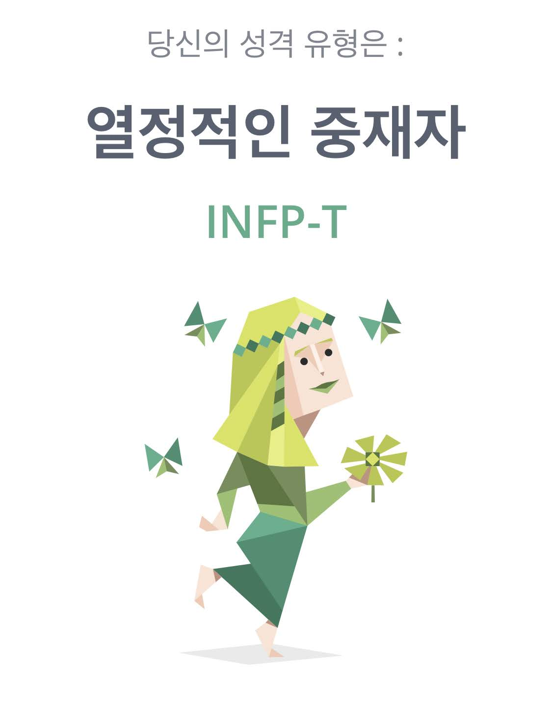

중재자(INFP)는 언뜻 보기에 조용하고 자신을 내세우지 않는 것처럼 보이지만, 사실은 에너지와 열정이 넘치는 마음을 지닌 성격입니다. 이들은 창의적이고 상상력이 뛰어나며 몽상을 즐기는 성격으로, 머릿속에서 수많은 이야기를 만들어 내곤 합니다. 또한 음악과 예술과 자연에 대한 감수성이 뛰어나며 다른 사람의 감정을 빠르게 알아차리곤 합니다...?
INFP-T

중재자(INFP)는 언뜻 보기에 조용하고 자신을 내세우지 않는 것처럼 보이지만, 사실은 에너지와 열정이 넘치는 마음을 지닌 성격입니다. 이들은 창의적이고 상상력이 뛰어나며 몽상을 즐기는 성격으로, 머릿속에서 수많은 이야기를 만들어 내곤 합니다. 또한 음악과 예술과 자연에 대한 감수성이 뛰어나며 다른 사람의 감정을 빠르게 알아차리곤 합니다...?